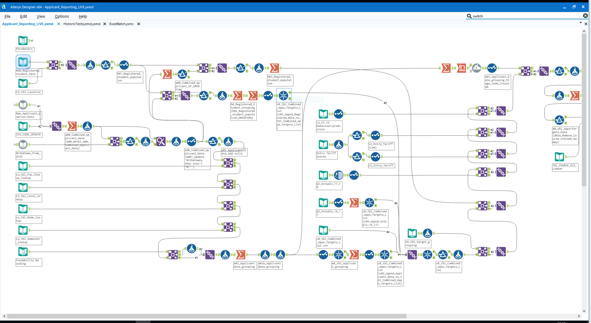

Everyone wanted a faster dashboard. I went and talked to the people who used it. Nobody trusted the outputs they were getting. The speed problem was real. But fixing it wouldn't have changed anything.
Consultants had built the model. The business had adopted it. Multi-million dollar e-commerce facility network decisions — where to build warehouses, which stores to use for fulfillment — ran on it. The presenting problem was dashboard speed: 8 hours to produce routine reports.
I went and talked to the people using the outputs. The real problem: they didn't trust the model. Not the speed. Not the format. The underlying conclusions. Esri consumer spending data looked like a strong predictor of e-commerce demand — until you asked whether it actually was. Nobody had. I ran PCA. It was the first validation the model had ever received.
Before touching anything, I conducted user assessments and led focus groups to understand how the model was actually being used versus how it was supposed to be used. The gap was significant. People trusted outputs they didn't fully understand because there was nothing better.
The dashboard situation was the same story: ad-hoc requests, constant stress, no repeatable process. I ran interviews to understand what decisions people were actually trying to make — and built backward from there.
Once I understood the real problem, I worked on two fronts simultaneously: rebuild trust in the model, and make the reporting process something the team actually wanted to use.

Note: Illustrative example of an Alteryx workflow. This is not the actual L-Trix workflow used at Peapod Digital Labs.
The ad-hoc dashboard chaos became a repeatable, user-centric process that the team actually wanted to use.
The real change: multi-million dollar facility decisions started being made on a model that had actually been validated. That's not a small thing.